CH 7.2 – Parabolas
In Section 7.1 we learned that when a conic is cut by a plane, it creates a circle. When a conic is cut by a plane on an angle such that it only intersects the top or bottom half of the conic it creates a parabola.
We have already learned that the graph of a quadratic function \(f(x) = ax^2 + bx + c\) (\(a \neq 0\)) is called a parabola, which we discussed ever so briefly in Chapter 2. However, now we are going to define it slightly differently.
Definition of a Parabola
Let \(F\) be a point in the plane and \(D\) be a line not containing \(F\). A parabola is the set of all points equidistant from \(F\) and \(D\). The point \(F\) is called the focus of the parabola and the line \(D\) is called the directrix of the parabola.
Schematically, we have the following.
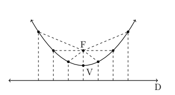
Each dashed line from the point \(F\) (focus) to a point on the curve has the same length as the dashed line from the point on the curve to the line \(D\) (directrix). The point suggestively labeled \(V\) is, as you should expect, the vertex. The vertex is the point on the parabola closest to the focus.
We want to use only the distance definition of parabola to derive the equation of a parabola and, if all is right with the universe, we should get an expression much like those studied in Chapter 2. Let \(p\) denote the directed distance from the vertex to the focus, which by definition is the same as the distance from the vertex to the directrix. For simplicity, assume that the vertex is \((0,0)\) and that the parabola opens upwards. Hence, the focus is \((0,p)\) and the directrix is the line \(y = -p\). Our picture becomes
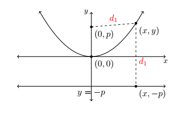
From the definition of parabola, we know the distance from \((0,p)\) to \((x,y)\) is the same as the distance from \((x,-p)\) to \((x,y)\). Using the Distance Formula, we get
\[ \begin{array}{rclr} \sqrt{(x-0)^2+(y-p)^2} &=& \sqrt{(x-x)^2+(y-(-p))^2} & \\[6pt] \sqrt{x^2+(y-p)^2} &=& \sqrt{(y+p)^2} & \\[6pt] x^2+(y-p)^2 &=& (y+p)^2 & \text{square both sides} \\[6pt] x^2+y^2-2py+p^2 &=& y^2+2py+p^2 & \text{expand quantities} \\[6pt] x^2 &=& 4py & \text{gather like terms} \end{array} \]Solving for \(y\) yields \(y = \dfrac{x^2}{4p}\), which is a quadratic function in standard form with \(a = \dfrac{1}{4p}\) and vertex \((0,0)\).
We know from previous experience that if the coefficient of \(x^2\) is negative, the parabola opens downwards. In the equation \(y = \dfrac{x^2}{4p}\) this happens when \(p < 0\). In our formulation, we say that \(p\) is a "directed distance" from the vertex to the focus: if \(p > 0\), the focus is above the vertex; if \(p < 0\), the focus is below the vertex. The focal length of a parabola is \(|p|\).
If we choose to place the vertex at an arbitrary point \((h,k)\), we arrive at the following formula:
The Standard Equation of a Parabola
The equation of a parabola with vertex \((h,k)\) and focal length \(|p|\) is:
Vertical Axis
\((x-h)^2 = 4p(y-k)\)
Directrix: \(y = k - p\)
Focus: \((h,\ k+p)\)
Horizontal Axis
\((y-k)^2 = 4p(x-h)\)
Directrix: \(x = h - p\)
Focus: \((h+p,\ k)\)
Vertical Axis
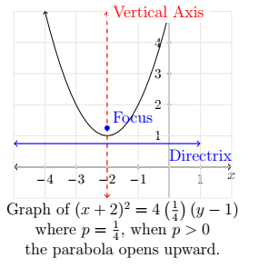
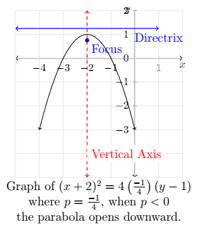
Horizontal Axis
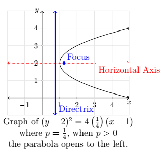
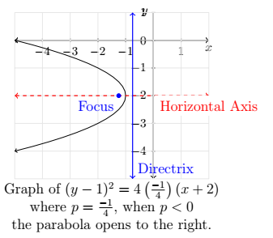
Notice that in the standard equation of the parabola above, only one of the variables is squared. This is a quick way to distinguish an equation of a parabola from that of a circle because in the equation of a circle, both variables are squared. It is also how you can distinguish between a vertical or horizontal axis of symmetry.
Example
- Graph \((x+1)^2 = -8(y-3)\). Find the vertex, focus, and directrix.
- Graph \((y-2)^2 = 12(x+1)\). Find the vertex, focus, and directrix.
Solution
1. We recognize that the equation is already in standard form. Here, \(x - h\) is \(x + 1\) so \(h = -1\), and \(y - k\) is \(y - 3\) so \(k = 3\). Hence, the vertex is \((-1, 3)\). We also see that \(4p = -8\) so \(p = -2\). Since \(p < 0\), the focus will be below the vertex and the parabola will open downwards.
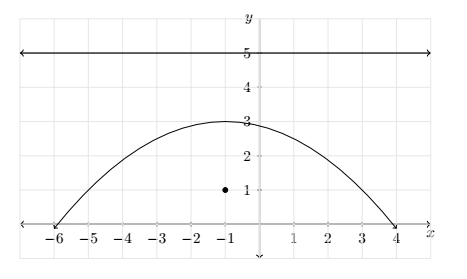
The distance from the vertex to the focus is \(|p| = 2\), which means the focus is \(2\) units below the vertex. From \((-1, 3)\), we move down \(2\) units and find the focus at \((-1, 1)\). The directrix, then, is \(2\) units above the vertex, so it is the line \(y = 5\).
2. We recognize this equation is already in standard form. Here, \(x - h\) is \(x + 1\) so \(h = -1\), and \(y - k\) is \(y - 2\) so \(k = 2\). Hence, the vertex is \((-1, 2)\). We also see that \(4p = 12\) so \(p = 3\). Since \(p > 0\), the focus will be to the right of the vertex and the parabola will open to the right. The distance from the vertex to the focus is \(|p| = 3\), which means the focus is \(3\) units to the right. If we start at \((-1, 2)\) and move right \(3\) units, we arrive at the focus \((2, 2)\). The directrix, then, is \(3\) units to the left of the vertex and if we move left \(3\) units from \((-1, 2)\), we'd be on the vertical line \(x = -4\). Since the focal diameter is \(|4p| = 12\), the parabola is \(12\) units wide at the focus, and thus there are points \(6\) units above and below the focus on the parabola.
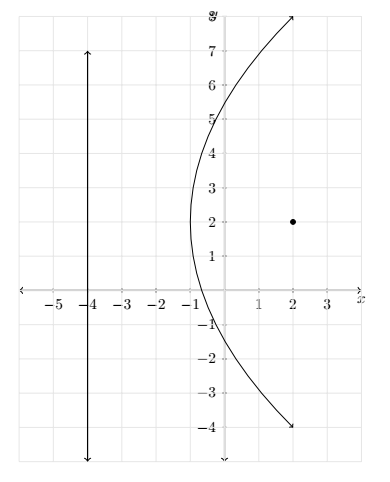
Of all of the information requested in the previous example, only the vertex is part of the graph of the parabola. So in order to get a sense of the actual shape of the graph, we need some more information. While we could plot a few points randomly, a more useful measure of how wide a parabola opens is the length of the parabola's latus rectum. The latus rectum of a parabola is the line segment parallel to the directrix which contains the focus. The endpoints of the latus rectum are, then, two points on "opposite" sides of the parabola. Graphically, we have the following.
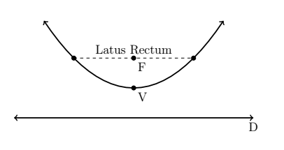
It turns out that the length of the latus rectum, called the focal diameter of the parabola is \(|4p|\), which, in light of the standard form of a parabola, is easy to find. In our last example, for instance, when graphing \((x+1)^2 = -8(y-3)\), we can use the fact that the focal diameter is \(|-8| = 8\), which means the parabola is \(8\) units wide at the focus, to help generate a more accurate graph by plotting points \(4\) units to the left and right of the focus.
Example
Find the standard form of the parabola with focus \((2,1)\) and directrix \(y = -4\).
Solution
Sketching the data yields,
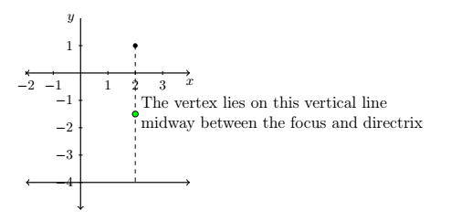
From the diagram, we see the parabola opens upwards. (Take a moment to think about it if you don't see that immediately.) Hence, the vertex lies below the focus and has an \(x\)-coordinate of \(2\). To find the \(y\)-coordinate, we note that the distance from the focus to the directrix is \(1 - (-4) = 5\), which means the vertex lies \(\frac{5}{2}\) units (halfway) below the focus. Starting at \((2, 1)\) and moving down \(\frac{5}{2}\) units leaves us at \(\left(2, -\frac{3}{2}\right)\), which is our vertex. Since the parabola opens upwards, we know \(p\) is positive. Thus \(p = \frac{5}{2}\). Plugging all of this data into the standard form of the equation gives us
\[ \begin{array}{rcl} (x-2)^2 &=& 4\left(\dfrac{5}{2}\right)\left(y - \left(-\dfrac{3}{2}\right)\right) \\[10pt] (x-2)^2 &=& 10\left(y + \dfrac{3}{2}\right) \end{array} \]As with circles, not all parabolas will come to us in the standard forms. If we encounter an equation with two variables in which exactly one variable is squared, we can attempt to put the equation into a standard form using the following steps.
To Write the Equation of a Parabola in Standard Form
- Group the variable which is squared on one side of the equation and position the non-squared variable and the constant on the other side.
- Complete the square if necessary and divide by the coefficient of the perfect square.
- Factor out the coefficient of the non-squared variable from it and the constant.
Example
Consider the equation \(y^2 + 4y + 8x = 4\). Put this equation into standard form and graph the parabola. Find the vertex, focus, and directrix.
Solution
We need a perfect square (in this case, using \(y\)) on the left-hand side of the equation and factor out the coefficient of the non-squared variable (in this case, the \(x\)) on the other.
\[ \begin{array}{rclr} y^2 + 4y + 8x &=& 4 & \\[6pt] y^2 + 4y &=& -8x + 4 & \\[6pt] y^2 + 4y + 4 &=& -8x + 4 + 4 & \text{complete the square in } y \text{ only} \\[6pt] (y+2)^2 &=& -8x + 8 & \text{factor} \\[6pt] (y+2)^2 &=& -8(x-1) & \end{array} \]Now that the equation is in standard form, we see that \(x - h\) is \(x - 1\) so \(h = 1\), and \(y - k\) is \(y + 2\) so \(k = -2\). Hence, the vertex is \((1, -2)\). We also see that \(4p = -8\) so that \(p = -2\). Since \(p < 0\), the focus will be to the left of the vertex and the parabola will open to the left. The distance from the vertex to the focus is \(|p| = 2\), which means the focus is \(2\) units to the left of \(1\), so if we start at \((1, -2)\) and move left \(2\) units, we arrive at the focus \((-1, -2)\). The directrix, then, is \(2\) units to the right of the vertex, so if we move right \(2\) units from \((1, -2)\), we'd be on the vertical line \(x = 3\). Since the focal diameter \(|4p|\) is \(8\), the parabola is \(8\) units wide at the focus, so there are points \(4\) units above and below the focus on the parabola.
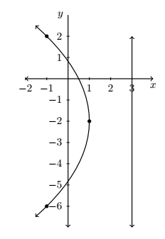
In studying quadratic functions, we have seen parabolas used to model physical phenomena such as the trajectories of projectiles. Other applications of the parabola concern its reflective property which necessitates knowing about the focus of a parabola. For example, many satellite dishes are formed in the shape of a paraboloid of revolution.
Every cross section through the vertex of the paraboloid is a parabola with the same focus. To see why this is important, imagine the dashed lines below as electromagnetic waves heading towards a parabolic dish. It turns out that the waves reflect off the parabola and concentrate at the focus which then becomes the optimal place for the receiver. If, on the other hand, we imagine the dashed lines as emanating from the focus, we see that the waves are reflected off the parabola in a coherent fashion as in the case in a flashlight. Here, the bulb is placed at the focus and the light rays are reflected off a parabolic mirror to give directional light.
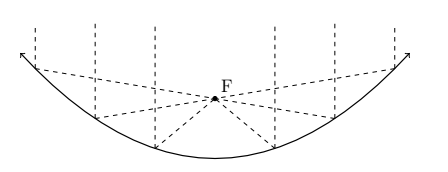
Example
A satellite dish is to be constructed in the shape of a paraboloid of revolution. If the receiver placed at the focus is located \(2\) ft above the vertex of the dish, and the dish is to be \(12\) feet wide, how deep will the dish be?
Solution
One way to approach this problem is to determine the equation of the parabola suggested to us by this data. For simplicity, we'll assume the vertex is \((0,0)\) and the parabola opens upwards. Our standard form for such a parabola is \(x^2 = 4py\). Since the focus is \(2\) units above the vertex, we know \(p = 2\), so we have \(x^2 = 8y\). Visually,

Since the parabola is \(12\) feet wide, we know the edge is \(6\) feet from the vertex. To find the depth, we are looking for the \(y\) value when \(x = 6\). Substituting \(x = 6\) into the equation of the parabola yields \(6^2 = 8y\) or \(y = \dfrac{36}{8} = \dfrac{9}{2} = 4.5\). Hence, the dish will be \(4.5\) feet deep.
Exercises
Exercises to be added at a later date.